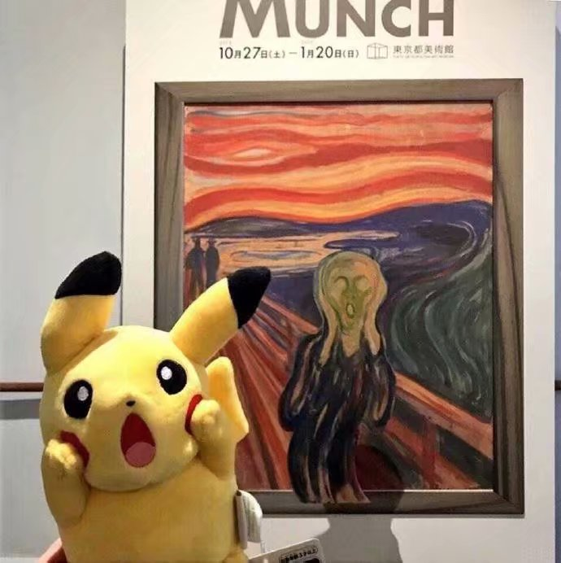

<!DOCTYPE html>
<html lang="en">
<head>
    <meta charset="UTF-8">
    <meta name="viewport" content="width=device-width, initial-scale=1.0">
    <meta http-equiv="X-UA-Compatible" content="ie=edge">
    <title>轮播图</title>
    <style>
        *{margin: 0;padding: 0;}
        a{text-decoration: none;}
        li{list-style: none;}
        #carousel{
            /* width: 500px;height: 400px; */
            background: pink;
            margin:50px auto;
            overflow: hidden;
            position:relative;
            border:3px solid blue;
        }
        #carousel .inner{
            width: 100%;
            position: absolute;
            left: 0;
            top: 0;
        }
        #carousel .inner ul{
            width: 100%;
        }
        /* #carousel .inner ul li{
            width: 500px;
            height: 100%;
        } */
        #carousel .inner ul li img{
            width: 100%;
            height: 100%;
        }
        #carousel .inner ul li{
            float:left;
        }
        #carousel .circles{
            position:absolute;
            bottom:5px;
            left:150px;
        }
        #carousel .circles li{
            float:left;
            width: 20px;height: 20px;
            background:green;
            margin-right: 10px;
            border-radius:50%;
            cursor:pointer;
        }
        #carousel .circles li.active{
            background:yellow;
        }
        #carousel .l_btn{
            position:absolute;
            left:5px;
            top:50%;
            font-size:40px;
            font-weight:bold;
        }
        #carousel .r_btn{
            position:absolute;
            right:5px;
            top:50%;
            font-size:40px;
            font-weight:bold;
        }
    </style>
</head>
<body>
    <div id="carousel">
        <!-- <div class="inner">
            <ul>
                <li></li>
                <li></li>
                <li></li>
                <li></li>
                <li></li>
            </ul>
        </div>
        <div class="circles">
            <ol>
                <li class="active"></li>
                <li></li>
                <li></li>
                <li></li>
                <li></li>
            </ol>
        </div>
        <a href="" class="l_btn">&lt;</a>
        <a href="" class="r_btn">&gt;</a> -->
    </div>
    <div id="lunbo">

    </div>
</body>
<script>
    window.onload=function(){
        new Carousel({
            width:'500',
            height:'400',
            ev:'onclick',//小圆点事件
            images:['image/1.jpg','image/2.jpg','image/3.jpg','image/4.jpg','image/5.jpg'],//轮播图数量
            outoPlay:true,//控制自动轮播
            interval:4000,//控制自动轮播的时间
            id:'carousel',
        });
    }
    function Carousel(JSON){
        this.$dom=document.getElementById(JSON.id);
        /*初始化所有属性 宽度 高度 运动时间 绑定事件 图片*/
        this.width=JSON.width;
        this.height=JSON.height;
        this.images=JSON.images;
        this.event=JSON.ev;
        this.interval=JSON.interval;
        this.pictureLength=JSON.images.length;
        this.timer=null;//控制自动轮播
        //初始化DOM结构
        this.init();
        
        //绑定事件
        this.bindEvent();
    }
    Carousel.prototype.init=function(){
        this.$dom.style.width=this.width+'px';
        this.$dom.style.height=this.height+'px';

        //创建inner ul 和 li
        this.$BigDiv=document.createElement('div');
        this.$BigDiv.className='inner';
        this.$ul=document.createElement('ul');

        //创建circles ol 和 li
        this.$smallDiv=document.createElement('div');
        this.$smallDiv.className='circles';
        this.$ol=document.createElement('ol');

        // 创建li
        for(var i=0;i<this.pictureLength;i++){
            var li=document.createElement('li');
            li.style.width=this.width+'px';
            li.style.height=this.height+'px';
            var img=document.createElement('img');
            img.src=this.images[i];
            li.appendChild(img);
            this.$ul.appendChild(li);

            var ol_li=document.createElement('li');
            this.$ol.appendChild(ol_li);
        }
        this.$ol.children[0].className='active';
        this.$BigDiv.appendChild(this.$ul);
        this.$dom.appendChild(this.$BigDiv);
        this.$smallDiv.appendChild(this.$ol);
        this.$dom.appendChild(this.$smallDiv);
        //前后补li
        var one_n=this.$ul.children[0].cloneNode(true);
        var last_n=this.$ul.children[this.pictureLength-1].cloneNode(true);
        this.$ul.appendChild(one_n);
        this.$ul.insertBefore(last_n,this.$ul.children[0]);
        this.$BigDiv.style.width=this.$ul.children.length*this.width+'px';
        this.$BigDiv.style.left=-this.width+'px';
        // 左右按钮
        this.$l_btn=document.createElement('a');
        this.$l_btn.href='javascript:;';
        this.$l_btn.className='l_btn';
        this.$l_btn.innerHTML='&lt;';
        this.$r_btn=document.createElement('a');
        this.$r_btn.href='javascript:;';
        this.$r_btn.className='r_btn';
        this.$r_btn.innerHTML='&gt;';
        this.$dom.appendChild(this.$l_btn);
        this.$dom.appendChild(this.$r_btn);
    }
    Carousel.prototype.bindEvent=function(){
        var lis=this.$ol.children;
        var _this=this;
        for(var i=0;i<lis.length;i++){
            (function(j){
                lis[j][_this.event]=function(){
                    for(var x=0;x<lis.length;x++){
                        lis[x].className='';
                    }
                    this.className='active';
                    _this.startMove(_this.$BigDiv,{left:-(j+1)*_this.width});
                }
            })(i)
        }
    }
    Carousel.prototype.startMove=function (obj,json,fn){
        clearInterval(obj.time);
        var _this=this;
        obj.time=setInterval(function(){
            var stop=true;//假设没有不到终点的值了
            for(i in json){
                if(i=='opacity'){
                    //获取透明度样式的写法
                    var style=Math.round(parseFloat(_this.getStyle(obj,i))*100);
                    }else{
                        //获取带px样式的写法
                        var style=parseInt(_this.getStyle(obj,i));
                    }
                    var speed=(json[i]-style)/10;
                    speed=speed>0?Math.ceil(speed):Math.floor(speed);
                    if(style!=json[i]){
                        stop=false;//意思就是说如果运动的样式其中有没到目标点的,把stop变成false
                    }
                    if(i=='opacity'){
                        //运动透明度
                        obj.style.opacity=(style+speed)/100;
                        obj.style.filter='alpha(opacity='+(style+speed)+')';
                    }else{
                        //运动其他样式
                        obj.style[i]=style+speed+'px';
                    }
            }
            if(stop){
                //判断如果stop还是true的情况下，说明没有不到终点的值了
                clearInterval(obj.time);
                if(fn) fn();
            }
        },10)
    }
    Carousel.prototype.getStyle=function(obj,cur){
        if(obj.currentStyle){
            return obj.currentStyle[cur];
        }else{
            return getComputedStyle(obj)[cur];
        }
    }
</script>
</html>